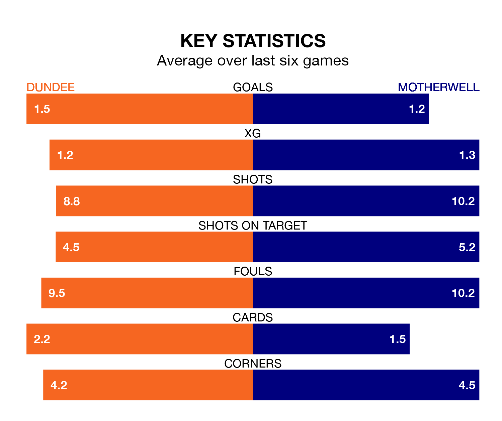

Saturday's match between Dundee and Motherwell promises to be one for the neutrals, as two of the Premiership's most free-scoring sides go head-to-head.
Ahead of the game at Kilmac Stadium at Dens Park, the Dees and Motherwell sit joint-third in the goal-scoring charts, with 42 goals apiece.
Midfielder Luke McCowan leads the way for the home side, having bagged eight goals in their 30 games to date.
And Thelonius Bair has been the main man in the opponents' penalty box for Motherwell, with 12 goals.
In the last 10 years, Dundee and Motherwell have played each other on 25 occasions. Dundee won nine of them, Motherwell 10, and they drew six times.
On average, the Dees scored 1.5 goals and Motherwell 1.4 in those matches.
Their last meeting was on December 2, when they played out a 3-3 draw.
With Trevor Carson between the sticks, Dundee can rely on one of the league's safest pair of hands. He has kept eight clean sheets in his 25 appearances this season in the Premiership.
In Motherwell's net, Liam Kelly has three clean sheets in 31 games.
The Dees are in mixed form in the Premiership, with three wins and a draw from their last six games.
With two wins and a draw over that period, the visitors' form is worse – they have taken seven points from 18, compared to the home team's 10.
Motherwell are eighth in the table after 31 games, of which they have won seven and drawn 12, earning 33 points.
Dundee are two places ahead of Motherwell in sixth, with 10 wins and nine draws putting them on 39 points.
Dundee's last match was on Saturday, a 2-1 win against St. Johnstone, with Amadou Bakayoko and Lyall Cameron getting the goals for the Dees.
Motherwell drew 1-1 with St. Mirren last time out, also on Saturday, with Bair on the scoresheet.
Saturday's match will be refereed by David Dickinson, who has taken charge of 16 Premiership games so far this season, issuing one red card and booking 68 players. He has awarded four penalties.
The last Dundee game Dickinson refereed was a 2-2 away draw with Kilmarnock on December 30. His last Motherwell match was their 2-0 loss at home against Rangers on December 24.
Updated: 16:41 (UTC), 04/04/24